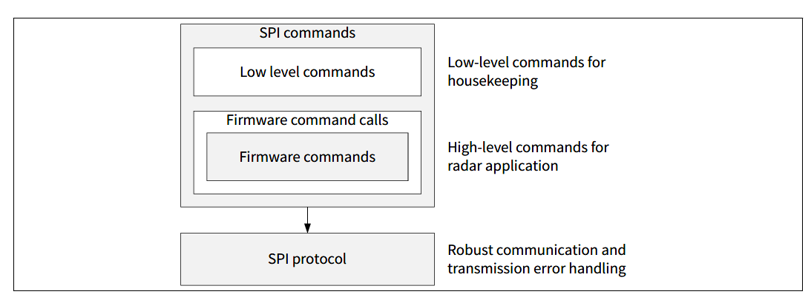
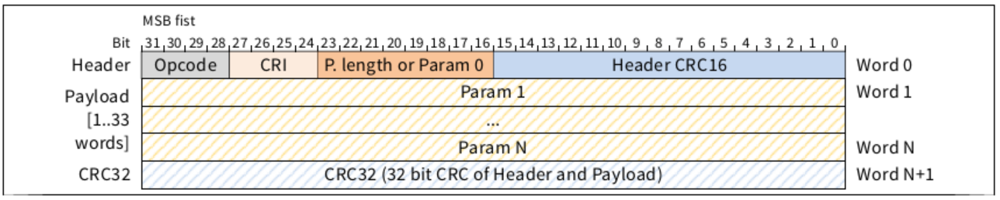
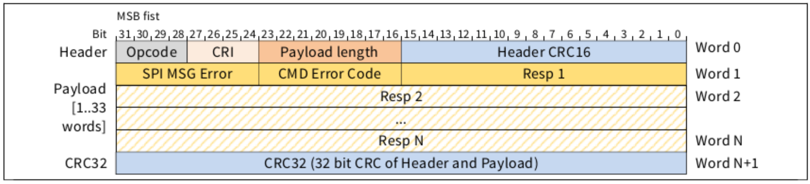

|
iRFE
Documentation for iRFE driver
|

|
|
iRFE
Documentation for iRFE driver
|
|
The configuration and control of the CTRX MMIC is done using standard 4 wire SPI slave interface and additional flow control pin RFT(ready for transfer).
The application controller uses the SPI interface to send SPI commands to configure and control the MMIC. The SPI commands trigger MMIC firmware functions that:
The simplified programming model for the CTRX firmware is shown below:

Housekeeping tasks, like triggering a device reset or a read-back of the last SPI response are available through low-level SPI commands. Details of the individual commands are further described at Low_level_commands
Configuration or execution of high-level firmware commands. This can be a single firmware command or a sequence of multiple firmware commands defined with batches. Details of the individual commands are further described at Firmware_command_calls
Configuration and execution of the radar application is done with high-level firmware commands. Details of the individual commands are further described at following subpages: Firmware_commands_8191_A11, Firmware_commands_8191_B11, Firmware_commands_8188
The SPI communication can be started by the system controller by pulling the Slave select to low, providing an SPI clock at SCLK and a serial data stream at SI.
Any data transferred over SPI is organized in frames, where a frame consists of:
Any frame consists of exactly one message from the MCU to the MMIC and a second message in the opposite direction from MMIC to the MCU. Messages are always left aligned in the frame, i.e. the frame's first word is always also both messages' first word. A frame can be longer than either message.
A Ready for Transfer (RFT) signal is used by the MMIC to indicate to the MCU whether or not the MMIC is ready for the transfer of a frame. The MMIC will set RFT to high level whenever it is ready for an SPI transfer. The MCU can transfer exactly one frame before it needs to wait for the RFT to be at high level again.
A message transferred from the MCU to the MMIC contains the information as shown in the figure below.

A message transferred from the MMIC to the external microcontroller (MCU) contains the information as shown in figure below.

For CRC calculation the following configuration as described in the table has to be used. Input and output reflection disabled means,that CRC calculation is done with MSB first.
| Parameter | CCITT CRC16 | IEEE 802.3 Ethernet CRC32 |
|---|---|---|
| Polynomial | 0x1021 | 0x04C11DB7 |
| Initial value | 0xFFFF | 0xFFFFFFFF |
| Final XOR | 0xFFFF | 0xFFFFFFFF |
| Input reflection | Disabled | Disabled |
| Output reflection | Disabled | Disabled |